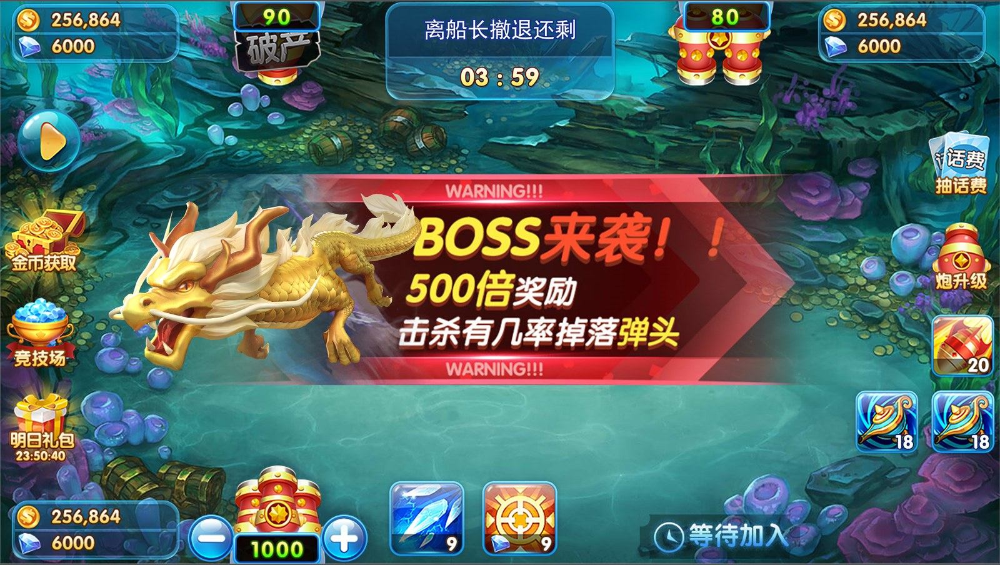

Fishing Game Art Assets
捕鱼游戏美术资源
展示捕鱼游戏 Boss、鱼类图集及动画配套文件。仓库中的 PNG、atlas 和 JSON 文件可用于了解素材组织结构，场景截图展示素材在捕鱼游戏中的组合效果。
简体中文产品介绍、功能说明、源码入口与截图繁體中文產品介紹、功能說明、原始碼入口與截圖EnglishProduct overview, source entry points and screenshots

展示捕鱼游戏 Boss、鱼类图集及动画配套文件。仓库中的 PNG、atlas 和 JSON 文件可用于了解素材组织结构，场景截图展示素材在捕鱼游戏中的组合效果。
